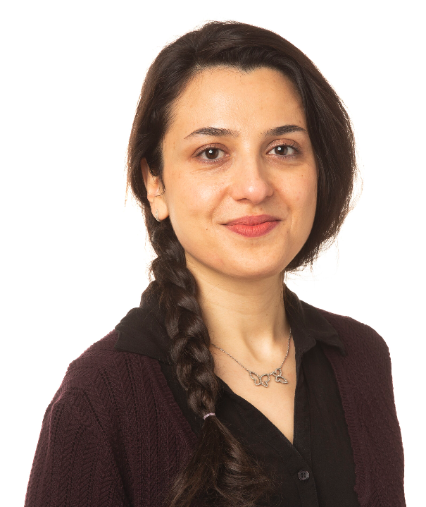
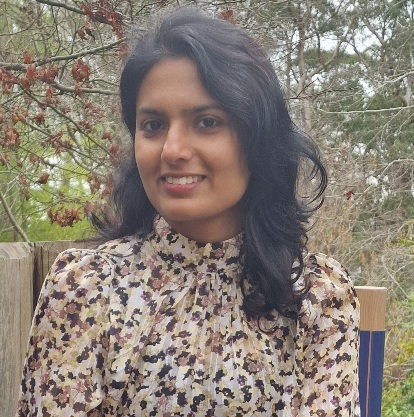

Recent advances in artificial intelligence have made it possible to generate highly realistic images directly from text descriptions. Modern text-to-image models, such as Nano Banana, can produce detailed images from prompts like "a red cube on a table." However, despite their impressive visual quality, these models do not reliably satisfy precise logical or structural constraints. This limitation restricts their applicability in domains such as healthcare, education, and scientific visualization, where generated images must consistently satisfy user-specified hard constraints.
This tutorial introduces participants to the emerging field of Constraint-Consistent Image Generation (CCIG), which aims to develop generative models that produce images guaranteed to satisfy specified constraints. We present the different components involved in CCIG, covering: (i) formal representation of structured visual requirements, using First Order Logic (FOL), Answer Set Programming (ASP) and scene graphs; (ii) an overview of modern conditional image generation models focusing on approaches in which conditioning signals are represented as either text or images, and examining the extent to which their conditioning mechanisms enforce adherence to these input constraints; we will explore these methodologies across a major industrial frontier — advanced virtual try-on systems; (iii) the challenges of systematically evaluating constraint satisfaction of generative models; and (iv) recent advances in Neuro-Symbolic AI, highlighting its potential for enabling image generation under hard constraints, as well as the open challenges that remain.
Drawing on recent developments in controlled image synthesis, knowledge representation and reasoning, and Neuro-Symbolic AI, the tutorial provides both the conceptual foundations and practical tools needed to understand and tackle the problem of constraint-consistent image generation. It is intended for researchers and practitioners in computer vision, generative AI, and AI more broadly who seek to move beyond perceptual quality metrics toward verification based evaluation of generative systems with an emphasis on reasoning about objects, relations, structure, and logical constraints.

Marjan Alirezaie
Savitha Sam AbrahamIndicative half-day tutorial schedule.
| Time | Topic |
|---|---|
| 15 minutes | CCIG Problem Specification and Motivation |
| 60 minutes |
Foundations I: Constraint Representation and Reasoning
|
| 10 minutes | Break |
| 45 minutes |
Foundations II: Introduction to Text to Image Generation Models
|
| 10 minutes | Break |
| 30 minutes |
Foundations II (Contd.): Existing Conditional Image Generation Models
|
| 5 minutes | Break |
| 30 minutes |
Future Directions: Neuro-Symbolic Approaches to CCIG
|
The tutorial is designed to be suitable to a wide variety of attendees at ACCV 2026. It targets researchers and practitioners in vision-language models and generative AI who are interested in exploring visual reasoning and Neuro-Symbolic AI, and the integration of these two paradigms. The tutorial aims to provide participants with an understanding of the maturity of the field and emerging research directions. It is suitable for an intermediate audience with no prior experience in formal logic or symbolic reasoning.
For questions about the tutorial, please contact: savitha.sam-abraham@city.ac.uk